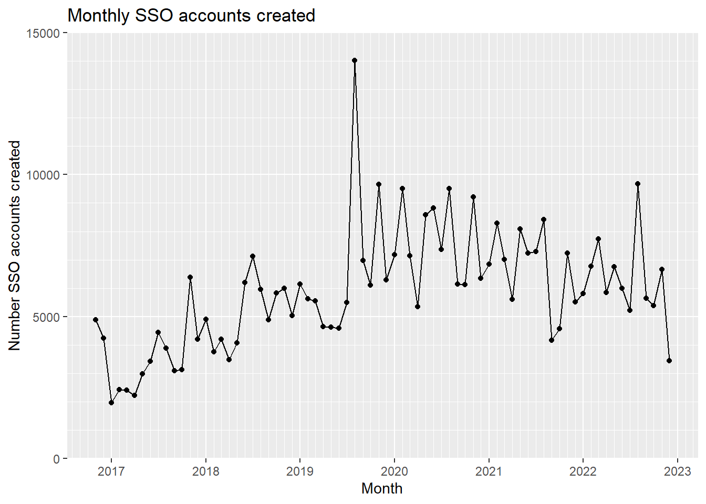

| Year | Accounts created | Accounts still active | Percent active |
|---|---|---|---|
| 2016 | 9114 | 1119 | 12.28% |
| 2017 | 40579 | 7200 | 17.74% |
| 2018 | 61436 | 11072 | 18.02% |
| 2019 | 79709 | 14979 | 18.79% |
| 2020 | 91264 | 18529 | 20.30% |
| 2021 | 80249 | 18911 | 23.57% |
| 2022 | 74914 | 47507 | 63.42% |
| Total | 437265 | 119317 | 27.29% |
Single sign-on (SSO)
This document reports the latest counts of single sign-on user accounts at Auckland Council, and what they have been used for. It reports how many of the accounts have done multiple things with their account.
Report last updated: 2022-12-19
Account creation by year
The total number of SSO accounts created each year is shown in the table below, along with the number and percentage that were used within the last 6 months. Obviously 2022 has the highest percentage of these “active” users but there are still plenty of accounts that were created many years ago that are still being used.
Account creation by month
The total number of SSO accounts created each month is shown in the chart below. The peak in August 2019 was the launch of myAUCKLAND. After this date there is a peak every quarter coinciding with rates payment instalments (August, November, February and May).

Usage of each service.
The number of user accounts who have used each service is shown in the table below, along with the percentage of the accounts that have logged in the last 6 months.
| Product | Total accounts | Accounts still active | Percent active |
|---|---|---|---|
| myAUCKLAND Dogs | 15145 | 8853 | 58.45% |
| myAUCKLAND Rates | 90362 | 42812 | 47.38% |
| Accomm booking | 43088 | 8440 | 19.59% |
| Venue hire | 9379 | 3357 | 35.79% |
| Library room booking | 3123 | 657 | 21.04% |
| Sports field booking (OLD) | 2819 | 297 | 10.54% |
| BC orders | 26341 | 11662 | 44.27% |
| RC orders | 5286 | 2677 | 50.64% |
| Licence orders | 57051 | 15149 | 26.55% |
| BWOF renewals | 84 | 76 | 90.48% |
| Solicitors rates statement | 5889 | 2083 | 35.37% |
It can be seen that myAUCKLAND property rates is the most frequently used product, with Licence orders the second most popular. myAUCKLAND property rates also has a comparatively high proportion of users returning. The fact that BWOF renewals has the highest proportion of active users is recency bias - this service was only launched in June 2022. Accommodation booking has a very low number of active users, there are tens of thousands of accounts that were created to book accommodation that have not been used since, presumably many overseas tourists. Sports field booking has the lowest percentage of active users because this only contains data from the old booking system (on Sphere) and not the new system (on Hybris) yet.
Products that have not been added yet include:
- Building inspection booking
- Swimming pool fence inspection booking
- Sports field booking (new system)
- Events permit application
- Property valuation objection
I believe that this represents all the products that require a SSO user account. All the remaining products can be used unauthenticated. I do not think that any reporting of the use of Report a problem while logged in, or the use of the add a problem to your myAUCKLAND is possible.
Number of services used by each user account
The distribution of the number of services that a user account has used is shown in the table below. It can be seen that there are hundreds of thousands of user accounts that have never used a service. (Albeit that there are some services missing). And then most of the user accounts have only used a single service. Very few user accounts have used more than one service.
| Number of services used | Distribution of accounts |
|---|---|
| 0 | 215577 |
| 1 | 190083 |
| 2 | 26105 |
| 3 | 4999 |
| 4 | 463 |
| 5 | 35 |
| 6 | 3 |
The % of the users of each service who use no other service is shown in the table below. It can be seen that myAUCKLAND dogs is the only service where a majority of the users also use another service. As will be seen later this is mainly due to licence orders and whether this is bad data will be discussed later. The various consents services also show a degree of reuse which is to be expected if these are consenting and building professionals. Over 85% of the accounts used to book accommodation have done nothing else. But surprisingly the service where the users have done the least amount of other things is the Solicitors request for rates balance. You’d think that these people might have also used myAUCKLAND property rates but clearly solicitors and property managers are different people.
| Product | Accounts that do nothing else | Total accounts | Percent of accounts |
|---|---|---|---|
| myAUCKLAND Rates | 71942 | 90362 | 79.62% |
| myAUCKLAND Dogs | 3516 | 15145 | 23.22% |
| Venue hire | 7408 | 9379 | 78.98% |
| Accomm booking | 37550 | 43088 | 87.15% |
| Library room booking | 2325 | 3123 | 74.45% |
| Sports field booking (OLD) | 2300 | 2819 | 81.59% |
| BC orders | 17068 | 26341 | 64.80% |
| RC orders | 2263 | 5286 | 42.81% |
| Licence orders | 39783 | 57051 | 69.73% |
| BWOF renewals | 43 | 84 | 51.19% |
| Solicitors rates balance | 5584 | 5889 | 94.82% |
Intersection of each service with each other
The intersection of each service with each other one is explored in the tables below.
myAUCKLAND property rates
Last record: 2022-11-30
Almost 80% of the users of myAUCKLAND property rates have done nothing else with their SSO account. It is most likely that a user who has added a property to myAUCKLAND will also have added a dog, or applied for a licence or applied for a building consent. It is unlikely that they will have booked a venue, library room or sports field.
| Product | Accounts that also do this | Percent of accounts |
|---|---|---|
| myAUCKLAND Dogs | 5649 | 6.252% |
| Accomm booking | 2996 | 3.316% |
| Venue hire | 752 | 0.832% |
| Library room booking | 173 | 0.191% |
| Sports field booking (OLD) | 161 | 0.178% |
| BC orders | 4587 | 5.076% |
| RC orders | 587 | 0.650% |
| Licence orders | 8291 | 9.175% |
| BWOF renewals | 18 | 0.020% |
| Solicitors rates balance | 122 | 0.135% |
| None (myAUCKLAND rates is the only thing) | 71942 | 79.615% |
myAUCKLAND dogs
Last record: 2022-11-30
Users of myAUCKLAND dogs are by far the most likely to also do something else with their SSO account, with this mainly adding a property to myAUCKLAND, and particularly applying for a licence. This suggests that a “licence order” is generated when a dog is registered? The number of users seems too high for it just to be the licence to keep more than one dog. Will need to investigate to see what it is contained within the “Licence order”. Meanwhile it is unlikely that they will have applied for a consent or have booked a venue, library room or sports field.
| Product | Accounts that also do this | Percent of accounts |
|---|---|---|
| myAUCKLAND Rates | 5649 | 37.299% |
| Accomm booking | 527 | 3.480% |
| Venue hire | 106 | 0.700% |
| Library room booking | 28 | 0.185% |
| Sports field booking (OLD) | 33 | 0.218% |
| BC orders | 783 | 5.170% |
| RC orders | 90 | 0.594% |
| Licence orders | 8564 | 56.547% |
| BWOF renewals | 1 | 0.007% |
| Solicitors rates balance | 10 | 0.066% |
| None (myAUCKLAND Dogs is the only thing) | 3516 | 23.216% |
Accommodation booking
Last record: 2022-11-29
Customers who have booked accommodation (or picnic sites) are very unlikely to do anything else with their SSO account, though there are over 850 who have also submitted a building consent. The low number of people who also venue hire is maybe surprising, you might think there are some event professionals in there.
| Product | Accounts that also do this | Percent of accounts |
|---|---|---|
| myAUCKLAND Rates | 2996 | 6.953% |
| myAUCKLAND Dogs | 527 | 1.223% |
| Venue hire | 343 | 0.796% |
| Library room booking | 105 | 0.244% |
| Sports field booking (OLD) | 88 | 0.204% |
| BC orders | 866 | 2.010% |
| RC orders | 169 | 0.392% |
| Licence orders | 1712 | 3.973% |
| BWOF renewals | 2 | 0.005% |
| Solicitors rates balance | 19 | 0.044% |
| None (Accomm booking is the only thing) | 37550 | 87.147% |
Venue hire
Last record: Unknown
Customers who have booked a venue are unlikely to do anything else with their SSO account. The relatively low number who have also applied for a licence is surprising given that a special alcohol licence might be required for their event.
| Product | Accounts that also do this | Percent of accounts |
|---|---|---|
| myAUCKLAND Rates | 752 | 8.018% |
| myAUCKLAND Dogs | 106 | 1.130% |
| Accomm booking | 343 | 3.657% |
| Library room booking | 446 | 4.755% |
| Sports field booking (OLD) | 104 | 1.109% |
| BC orders | 126 | 1.343% |
| RC orders | 26 | 0.277% |
| Licence orders | 420 | 4.478% |
| BWOF renewals | 2 | 0.021% |
| Solicitors rates balance | 4 | 0.043% |
| None (Venue hire is the only thing) | 7408 | 78.985% |
Library room booking
Last record: 2023-07-24
Customers who have booked a library room are unlikely to do anything else with their SSO account. Only venue hire shows a correlation.
| Product | Accounts that also do this | Percent of accounts |
|---|---|---|
| myAUCKLAND Rates | 173 | 5.540% |
| myAUCKLAND Dogs | 28 | 0.897% |
| Venue hire | 446 | 14.281% |
| Accomm booking | 105 | 3.362% |
| Sports field booking (OLD) | 23 | 0.736% |
| BC orders | 44 | 1.409% |
| RC orders | 6 | 0.192% |
| Licence orders | 119 | 3.810% |
| BWOF renewals | 1 | 0.032% |
| Solicitors rates balance | 4 | 0.128% |
| None (Library room booking is the only thing) | 2325 | 74.448% |
Sports field booking
Last record: 2018-10-09
Customers who have booked a sports field are unlikely to do anything else with their SSO account except that there is a bit of a correlation with licence orders which could be expected given that they might be admin staff for sports clubs who also need to sort out alcohol licences. But caution is advised as this is just the old sports field booking system.
| Product | Accounts that also do this | Percent of accounts |
|---|---|---|
| myAUCKLAND Rates | 161 | 5.71% |
| myAUCKLAND Dogs | 33 | 1.17% |
| Venue hire | 104 | 3.69% |
| Accomm booking | 88 | 3.12% |
| Library room booking | 23 | 0.82% |
| BC orders | 55 | 1.95% |
| RC orders | 13 | 0.46% |
| Licence orders | 176 | 6.24% |
| BWOF renewals | 0 | 0.00% |
| Solicitors rates balance | 4 | 0.14% |
| None (Sports field booking is the only thing) | 2300 | 81.59% |
Building consent orders
Last record: 2022/11/30 00:00:00
Customers who have applied for a building consent are comparatively likely to do other things with their SSO account. Obviously there is a correlation with resource consents, and many of them have added a property to myAUCKLAND, but perhaps a surprise is how many have applied for a licence as well.
| Product | Accounts that also do this | Percent of accounts |
|---|---|---|
| myAUCKLAND Rates | 4587 | 17.414% |
| myAUCKLAND Dogs | 783 | 2.973% |
| Venue hire | 126 | 0.478% |
| Accomm booking | 866 | 3.288% |
| Library room booking | 44 | 0.167% |
| Sports field booking (OLD) | 55 | 0.209% |
| RC orders | 2564 | 9.734% |
| Licence orders | 2323 | 8.819% |
| BWOF renewals | 20 | 0.076% |
| Solicitors rates balance | 68 | 0.258% |
| None (BC orders is the only thing) | 17068 | 64.796% |
Resource consent orders
Last record: 2022/11/30 00:00:00
Customers who have applied for a resource consent are fairly likely to also have applied for a building consent, and plenty of them have also added a property to myAUCKLAND, but they do little else with their SSO account.
| Product | Accounts that also do this | Percent of accounts |
|---|---|---|
| myAUCKLAND Rates | 587 | 11.105% |
| myAUCKLAND Dogs | 90 | 1.703% |
| Venue hire | 26 | 0.492% |
| Accomm booking | 169 | 3.197% |
| Library room booking | 6 | 0.114% |
| Sports field booking (OLD) | 13 | 0.246% |
| BC orders | 2564 | 48.505% |
| Licence orders | 233 | 4.408% |
| BWOF renewals | 2 | 0.038% |
| Solicitors rates balance | 73 | 1.381% |
| None (RC orders is the only thing) | 2263 | 42.811% |
Licence orders
Last record: 2022/11/30 00:00:00
Customers who have applied for a licence are fairly likely to also do other things with their SSO account.
| Product | Accounts that also do this | Percent of accounts |
|---|---|---|
| myAUCKLAND Rates | 8291 | 14.533% |
| myAUCKLAND Dogs | 8564 | 15.011% |
| Venue hire | 420 | 0.736% |
| Accomm booking | 1712 | 3.001% |
| Library room booking | 119 | 0.209% |
| Sports field booking (OLD) | 176 | 0.308% |
| BC orders | 2323 | 4.072% |
| RC orders | 233 | 0.408% |
| BWOF renewals | 9 | 0.016% |
| Solicitors rates balance | 54 | 0.095% |
| None (Licence orders is the only thing) | 39783 | 69.732% |
BWOF renewals
Last record: 2022/11/30 00:00:00
There are so few customers who have renewed a BWOF so far that this is pointless. However once more people have used the service it might start to provide insights.
| Product | Accounts that also do this | Percent of accounts |
|---|---|---|
| myAUCKLAND Rates | 18 | 21.4% |
| myAUCKLAND Dogs | 1 | 1.2% |
| Venue hire | 2 | 2.4% |
| Accomm booking | 2 | 2.4% |
| Library room booking | 1 | 1.2% |
| Sports field booking (OLD) | 0 | 0.0% |
| BC orders | 20 | 23.8% |
| RC orders | 2 | 2.4% |
| Licence orders | 9 | 10.7% |
| Solicitors rates balance | 0 | 0.0% |
| None (BWOF renewals is the only thing) | 43 | 51.2% |
Solicitors rates balance
Last record: 2022-12-20
Almost none of the people who have access to the solicitors request for a rates statement of account have done anything else with their SSO user account. You’d think that these people might have also used myAUCKLAND property rates but clearly solicitors and property managers are different people.
| Product | Accounts that also do this | Percent of accounts |
|---|---|---|
| myAUCKLAND Rates | 122 | 2.072% |
| myAUCKLAND Dogs | 10 | 0.170% |
| Venue hire | 4 | 0.068% |
| Accomm booking | 19 | 0.323% |
| Library room booking | 4 | 0.068% |
| Sports field booking (OLD) | 4 | 0.068% |
| BC orders | 68 | 1.155% |
| RC orders | 73 | 1.240% |
| Licence orders | 54 | 0.917% |
| BWOF renewals | 0 | 0.000% |
| None (Solicitors rates balance is the only thing) | 5584 | 94.821% |